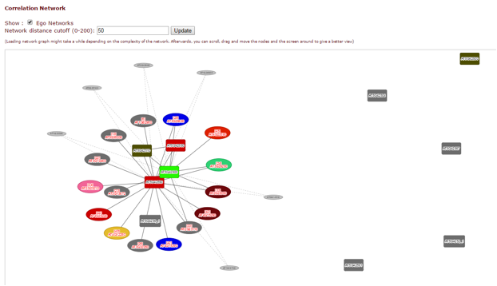

Coexpression analysis#
If coexpression data was provided (through either a .soft or .csv file), this panel will show expression information through both a hierarchically clustered heatmap and a coexpression network (see below).


You can choose to show either expression fluctuation (the rate of which expression level of a gene changes between samples), color-coded from white to black; or expression intensity (expression level of a gene related to the sample value distribution), color coded from yellow to red.

In the correlation network graph, you can see how genes within the cluster (box-shaped nodes) interact with each other, and with other genes in other clusters (ellipse-shaped nodes with solid edges and the corresponding cluster number inside) or anywhere else on the genome (ellipse-shaped nodes with dashed edges).

Additionally, by enabling the coexpression analysis, you will also get a Hiveplot overview of significant cluster-cluster interactions detected in the selected transcriptomics dataset. This can be accessed in the cluster overview screen.
Input data#
To see the input data of this module check Submitting jobs on the webserver